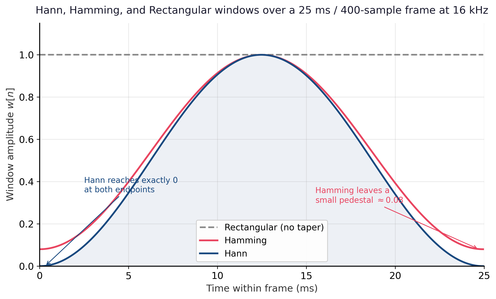

Why a signal-processing appendix in an LLM book? Because every audio model in Chapter 20 ingests log-mel spectrograms, not raw waveforms. Before any neural network sees a sound, that sound has been sampled, sliced into overlapping frames, and tapered with a window. This section establishes those three operations, which together define what one "input vector" to an audio transformer actually is.
Sampling and the Nyquist Theorem
A continuous-time acoustic signal $x_c(t)$ becomes a discrete sequence $x[n] = x_c(n T_s)$ by sampling every $T_s$ seconds. The reciprocal $f_s = 1 / T_s$ is the sample rate, measured in hertz. The Nyquist sampling theorem states that if $x_c$ contains no frequency components above $f_W$, then it can be exactly reconstructed from its samples provided
The intuition is spectral. Sampling at rate $f_s$ creates infinitely many copies (replicas) of the original spectrum $X_c(f)$, spaced $f_s$ apart on the frequency axis. If $f_s > 2 f_W$, neighboring replicas do not overlap, and an ideal low-pass filter recovers $X_c$ exactly. If $f_s \le 2 f_W$, the replicas overlap, and high frequencies fold back into low ones; this irreversible corruption is called aliasing. The frequency $f_s / 2$ is the Nyquist frequency, the highest representable frequency at sample rate $f_s$.
Common audio sample rates are matched to a band of interest. Telephony and most speech recognition systems use 16 kHz, which captures everything up to 8 kHz (more than enough for intelligible speech, whose energy lives mostly below 4 kHz). Audio CDs use 44.1 kHz, chosen to cover the nominal limit of human hearing (about 20 kHz) with a safety margin for the anti-alias filter. Professional and broadcast audio use 48 kHz for the same reason. Music generation and high-fidelity TTS sometimes go higher (24 kHz, 96 kHz), but for speech-centric LLM systems 16 kHz is the dominant default. Figure G.1.0 makes the sampling step concrete: a continuous waveform on the left is captured by a regular grid of measuring sticks, becoming the discrete sequence the rest of this appendix processes.
If the sample rate $f_s$ is set below twice the highest frequency present in the signal, the spectrum's replicas overlap and high frequencies fold back into lower bins, where they are indistinguishable from real low-frequency content. A 9 kHz sinusoid sampled at 16 kHz, for example, reappears as a phantom 7 kHz tone, and no later processing can recover the original. The fix is to always apply an analog or digital low-pass anti-alias filter with cutoff at or below $f_s / 2$ before decimation. This is why downsampling a 48 kHz Common Voice clip to 16 kHz for Whisper is never a plain slice of every third sample; production pipelines (librosa, torchaudio, sox) chain a low-pass FIR with a decimator for exactly this reason.
Framing: Short-Time Analysis
Speech and music are not stationary; their spectral content changes constantly. Computing one DFT over a 10-second utterance throws away all temporal structure. The standard remedy is framing: chop the signal into short, overlapping windows and analyze each one separately. Two parameters control this:
- Frame length $N$ (samples), typically corresponding to 20-30 ms of audio. Long enough that low-frequency content is resolvable, short enough that the signal is approximately stationary within the frame.
- Hop length $H$ (samples), the stride between successive frames. Typically $H = N / 4$ or $H = N / 2$, giving 75% or 50% overlap respectively. Overlap is necessary so that windowed frames cover the signal smoothly without dropping information at frame boundaries.
The number of frames produced from a signal of length $L$ samples is approximately $\lfloor (L - N) / H \rfloor + 1$, and the time resolution of the resulting spectrogram is $H / f_s$ seconds per frame.
At $f_s = 16{,}000$ Hz, a 25 ms frame is $N = 0.025 \times 16{,}000 = 400$ samples and a 10 ms hop is $H = 0.010 \times 16{,}000 = 160$ samples. One second of audio therefore produces about $(16{,}000 - 400) / 160 + 1 \approx 98$ frames. After mel binning (Section G.3), this becomes a $\sim 98 \times 80$ matrix per second, which is the input shape consumed by Whisper's encoder.
Windowing: Why We Taper
A rectangular frame, that is, the signal multiplied by an indicator function on $[0, N)$, is mathematically convolved with a sinc in the frequency domain (Slide 43 of the source DFT deck). The wide sinc side lobes produce spectral leakage: a pure sinusoid that does not fit an integer number of periods in the frame appears as a smeared peak with energy bleeding into neighboring bins. The cure is to multiply each frame by a tapered window $w[n]$ that smoothly rises and falls to zero at the frame edges, dramatically reducing side lobes at the cost of slightly wider main lobes.
The two most common choices in audio ML are:
The Hann window goes exactly to zero at the endpoints and is the default in most modern toolkits (librosa, torchaudio); Hamming leaves a small non-zero value at the edges and gives slightly lower side lobes at the cost of imperfect endpoint cancellation. For typical speech pipelines the difference is negligible; either works. Figure G.1.1 plots the two tapered shapes against a rectangular window so the difference in endpoint behaviour is visible at a glance.

The full sample-to-windowed-frames pipeline is a single librosa call: librosa.util.frame(y, frame_length=400, hop_length=160) returns the framed signal as a $(400, T)$ array, and scipy.signal.windows.hann(400) (or scipy.signal.windows.hamming(400)) supplies the taper. In practice librosa.stft(y, n_fft=512, hop_length=160, win_length=400, window="hann") rolls framing, windowing, zero-padding, and the FFT (Section G.2) into one call, which is what almost every production audio pipeline actually invokes.
Zero-Padding for FFT Length
The FFT (Section G.2) is fastest when the frame length is a power of two. A 25 ms frame at 16 kHz gives $N = 400$ samples, which is not a power of two. The standard workaround is to zero-pad the windowed frame up to the next power of two ($N_{\text{FFT}} = 512$ in this case) before transforming. Zero-padding does not add new information or improve frequency resolution; it only interpolates the existing spectrum onto a finer grid, which is useful for plotting and for keeping FFT sizes algorithm-friendly. True frequency resolution is set by the unpadded frame length and equals $f_s / N$ hertz per bin.
The framing, windowing, and sample-rate choices introduced here are reused throughout Section 20.5 (Speech Recognition) and motivate the input shape of the Whisper encoder discussed in Section 20.0.1 (Audio Data). The aliasing argument also shows up implicitly whenever Chapter 20 resamples a dataset, for example downsampling 48 kHz Common Voice clips to 16 kHz for Whisper.
One "input vector" for an audio model is not a single instant; it is a windowed, zero-padded frame of $N$ samples drawn every $H$ samples from a band-limited signal whose sample rate $f_s$ exceeds twice its highest frequency. Sampling, framing, and windowing together fix the shape of every later operation: bin spacing $\Delta f = f_s / N$, temporal resolution $H / f_s$, and the leakage profile of every spectrogram.
Objective. Convert the abstract framing parameters into shapes on a real waveform.
Task. Load any 5-second WAV file with librosa.load(path, sr=16000). Without using librosa.stft, frame the signal with frame_length=400 and hop_length=160 via librosa.util.frame. Report: total sample count, number of frames $T$, expected $T$ from the formula $\lfloor (L - N) / H \rfloor + 1$, the duration in seconds, and the per-bin frequency resolution $\Delta f$.
Stretch. Apply a Hann window to each frame and plot frames 10 and 100 overlaid. Confirm the Hann taper visibly suppresses the endpoints.
Further Reading
Foundations of Sampling and Windowing
Practical Audio Pipelines
librosa.util.frame, librosa.filters.get_window) used in the running example.